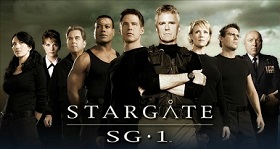

Home
About Me
Tv Shows and Movies
Geek Calendar
|
|
Stargate SG-1

The plot of Stargate SG-1 picks up a year after the conclusion of the events recounted
in the original feature film. It follows the present-day adventures of SG-1, a military team from Earth. SG-1 and two dozen
other SG teams venture to distant planets using a fictional alien portal known as a Stargate, which in the series is housed
in a top-secret United States Air Force military base known as Stargate Command (SGC) underneath Cheyenne Mountain in
Colorado Springs, Colorado. The SG teams explore the galaxy and search for alien technology and allies to defend Earth against
the Goa'uld, the Ori, and the Replicators.The series draws upon Egyptian mythology, Norse mythology, and Arthurian legend.
BACK
|